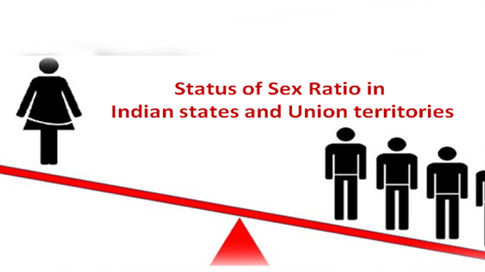
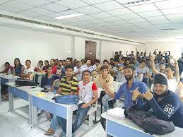
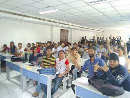
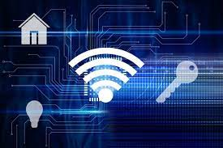
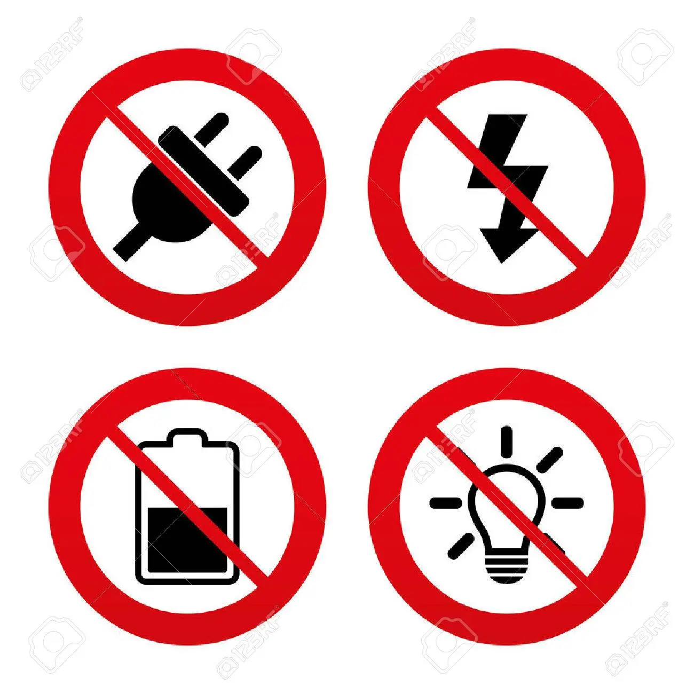
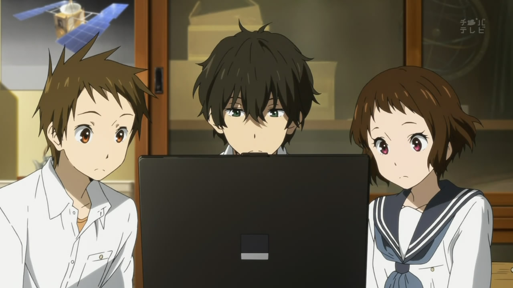
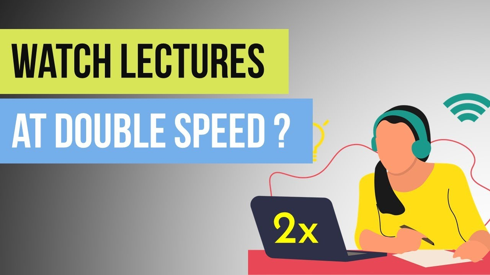

1.Lots of fun & exciting programe in first semester.
1. Just after coming gave mid semester and now only doing assignment and projects.
2.Aleast have decent amount of girls in campus.😁😉
2. Don't ask reality on it🤦‍♂️🤷‍♀️

3.College have threatical big classrooms.😬😮
3. Normal and small size classrooms
 
4.High speed wifi connectivity and 24X7 electricity.
4. Only have wifi connectivity speed upto 300MBps and electricity cut off is often.

5.Going to watch lots of anime and webseries.😎
5. Watching lots of lectures😒😒
 